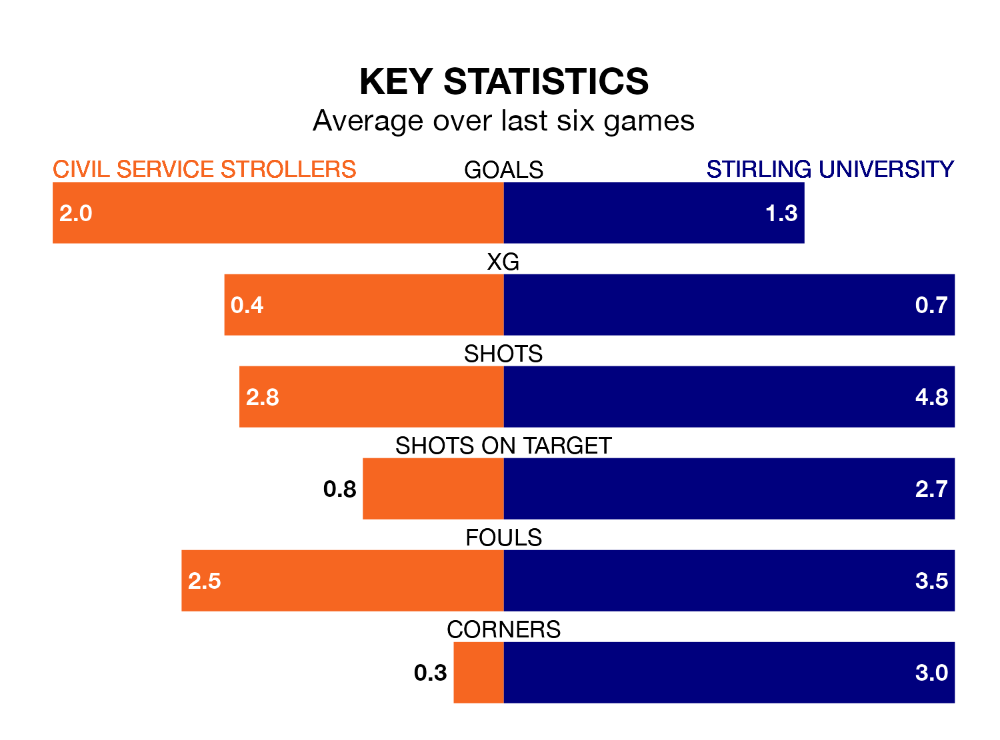

Civil Service Strollers host Stirling University on Saturday at the Civil Service Sports Ground in the Lowland Football League.
In their last league match, on February 17, Civil Service Strollers drew with Cumbernauld Colts 0-0 away.
Stirling University lost, 2-1 at home against Linlithgow Rose.
In the last 10 years, Civil Service Strollers and Stirling University have played each other on 11 occasions. They won five each, and they drew once.
On average, Civil Service Strollers scored 1.2 goals and Stirling University 1.3 in those matches.
Their last meeting was on November 8, when Civil Service Strollers won 2-0 away.
With 38 goals in 26 games so far this season, Stirling University are scoring at below the league average rate with 1.5 goals per game. But they are conceding fewer than average too, letting in 37 goals at a rate of 1.4 per game.
Civil Service Strollers are also below average scorers, with 1.5 goals per game, compared to a league average of 1.7. They have conceded 1.0 goal per game.
The home team are sixth in the table after 25 games, of which they have won 12 and drawn six, earning 42 points.
The visitors are four places behind Civil Service Strollers in 10th, with 11 wins and four draws putting them on 37 points.
Civil Service Strollers are in reasonable form in the Lowland Football League, with three wins and two draws from their last six games.
With two wins and a draw over that period, Stirling University's form is worse – they have taken seven points from 18, compared to the hosts' 11.
Updated: 10:08 (UTC), 23/02/24